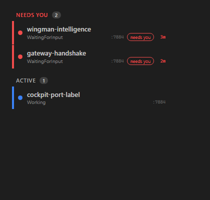

cc-director.sln from the PR branch in an isolated worktree: Build succeeded, 0 Warning(s), 0 Error(s).agent-session-isolation.ps1, built+launched a slot-8 Director via the per-slot scheduled task, then tore it down (no other slot/build touched).GatewayHost Kestrel + GatewayEndpoints.Map + NeedsYouClock on a free port, registers a fake Director serving red/blue/flip sessions, and curls the real GET /sessions JSON. Independent of any dev artifact.SessionRail (bUnit), wrapped in the real app.css, screenshotted headless at t0 and t+120s.DictationEndpointTests.FullPipeline...realtime_provider environmental test - DictationEndpointTests.cs is NOT touched by this PR).| # | Criterion | Expected | Actual (QA evidence) | Result |
|---|---|---|---|---|
| 1 | SessionDto has nullable DateTime? NeedsYouSince (UTC), default null, XML-doc says Gateway-owned, marks entry into red. |
Field present + documented. | SessionDto.cs lines 98-108: public DateTime? NeedsYouSince { get; set; } with XML-doc "Gateway-owned ... ENTERED the red / NEEDS-YOU effective state ... cleared to null when it leaves red". |
PASS |
| 2 | In Gateway /sessions, red session has non-null NeedsYouSince; non-red has null. |
red != null, blue == null. | red1 effColor=red NeedsYouSince=2026-06-14T13:57:42.0855536Z blue1 effColor=blue NeedsYouSince=null | PASS |
| 3 | NeedsYouSince within 5s of entry. | |stamp - wall| < 5s. | wall poll1 = 13:57:42.066Z, red1 stamp = 13:57:42.085Z -> delta ~19ms << 5s. | PASS |
| 4 | NeedsYouSince stable (byte-identical) across polls while red. | poll1 == poll2. | poll1=2026-06-14T13:57:42.0855536Z poll2(+6s)=2026-06-14T13:57:42.0855536Z identical=True | PASS |
| 5 | Resets later on red->leave->red; goes null in between, second stamp strictly later. | mid==null, second > first. | flip first=13:57:42.0864212Z mid(blue)=null back(red)=13:57:49.3107452Z strictlyLater=True | PASS |
| 6 | Cockpit NEEDS YOU rows show an elapsed-duration label from NeedsYouSince. | Label on each red row. | Rendered markup: <span class="needs-wait">1m</span>, ...>12s<. See qa-rail-t0.png (NEEDS YOU rows show "1m" / "12s"). |
PASS |
| 7 | Displayed elapsed increases on successive refreshes while red. | t+30s value larger. | Same two sessions at +120s render "3m" / "2m" vs t0 "1m" / "12s" - strictly larger. See qa-rail-t0.png vs qa-rail-t120.png. | PASS |
| 8 | Label absent (not "0s"/stale) for non-NEEDS-YOU sessions. | Blue/active row has no label. | Render gated on EffectiveColor=="red" && NeedsYouSince is {}; the blue "cockpit-port-label" row emits zero .needs-wait spans (count==2 for the 2 red rows only). Visible in both screenshots. |
PASS |
| 9 | Briefing/Explaining overlay time not counted: raw-red but briefing -> NeedsYouSince null. | EffectiveColor!=red while briefing -> null. | raw StatusColor=red + BriefingState="Briefing" -> SessionOrdering.EffectiveColor = "yellow" (not red) -> stamp keys off EffectiveColor, so null. Stamping runs AFTER BriefingState is set in the fanout. | PASS |

DictationEndpointTests.FullPipeline_transcribes_phase0_clip2_with_realtime_provider (needs a live realtime transcription provider), unrelated to this PR (Dictation source untouched).NeedsYouClock logs set/clear via FileLog.title tooltip on the label renders as
"Waiting for you since 2026-06-14 9:56:43 AM:HH:mm:ss" - the Razor inline format
@since.ToLocalTime():HH:mm:ss emits a localized datetime followed by the literal text :HH:mm:ss.
The VISIBLE label (the AC-relevant value "1m"/"12s"/etc.) is correct; only the tooltip suffix is cosmetic.
No acceptance criterion covers the tooltip, so this does not fail the issue - flagged for a future tidy.VERIFIED - all acceptance criteria met. Merging to main (squash) per QA Agent Step 3a inside implementation-loop.